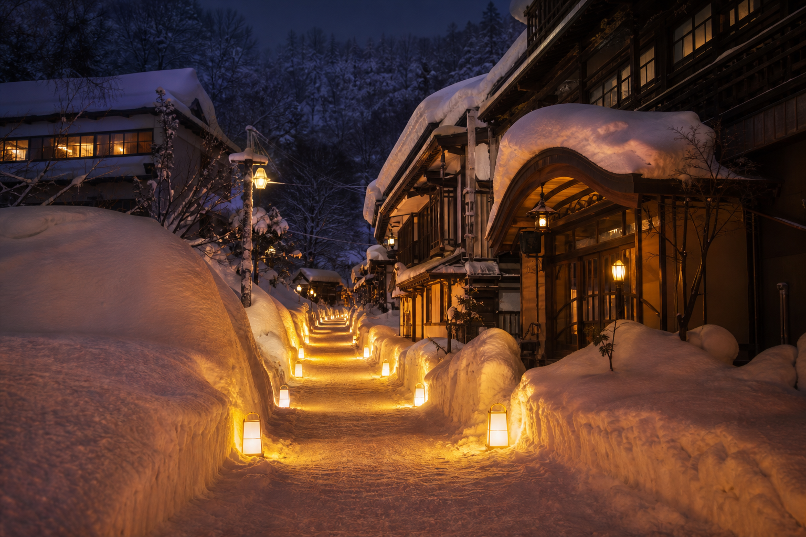
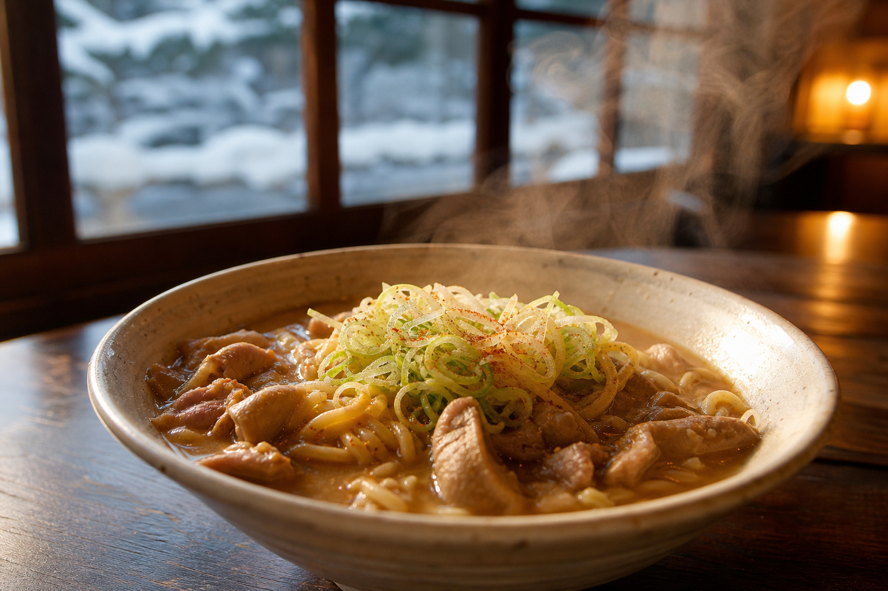

5月上旬まで × 豪雪パウダー
山形県内でも「シーズンインが早く、オフが遅い」と謳われる積雪量。春スキーの広域集客における最大の武器——月山とは規模で勝負せず、肘折温泉とのセットで差別化します。
料金・シーズン券山形県大蔵村 · 肘折温泉エリア
豪雪と秘湯・肘折温泉が織りなす、5月まで滑走可能なクロスカントリー＆レトロアルペンリゾート。
1日券 ¥2,000 12月〜5月上旬 XC3km SAJ公認更新 4/28 8:30
アンヴァーリフト
運行中
国内希少の滑走式リフト
シーズン
5月上旬まで
山形県内最長クラスの営業
雪質
春コーン
豪雪地帯 · 非混雑
XCコース
SAJ公認3km
1日券¥400 · 競技合宿可
Snow & Toji Pass
湯の台リフト1日券＋指定飲食店ランチ（トリモツラーメン等）＋日帰り入浴券をセット——スキー単体2時間の滞在を、秘湯1200年の経済圏へ組み込むパッケージです。


Access Fix
駐車場からリフトまで雪道徒歩は最大の不満点——口コミでは「非公式な神対応」の送迎が歓喜の声に。1往復500円等の有料公式オプション化で、苦行を体験価値に転換します。
滑走後は肘折温泉街へ——「田舎家」のトリモツラーメンか「寿屋」の本格蕎麦で、冷えた体を温める定番ルート。
送迎・グルメMAPDetox Loop
コアスキーヤーとウェルネス層向け——スキー場単体ではなく「雪と湯の体験」として1日を設計した回遊ルート。
SPRING SKI · HIJIORI TOJI01
湯の台スキー場
春コーンまたはXC（送迎付き）
02
田舎家 / 寿屋
トリモツラーメンか手打ち蕎麦
03
カルデラ温泉館
雪景色の露天で疲労回復
04
肘折温泉街
雪回廊散策・角打ち（カネヤマ商店）
05
旅館宿泊
翌朝は肘折朝市（任意）
Access
JR新庄駅から村営バス（肘折温泉行）約50分「牧場前」下車徒歩2分 · 舟形ICから約30分 · 駐車場50台無料
TEL 0233-76-2636（ノルディック館）
大蔵村観光 0233-75-2105